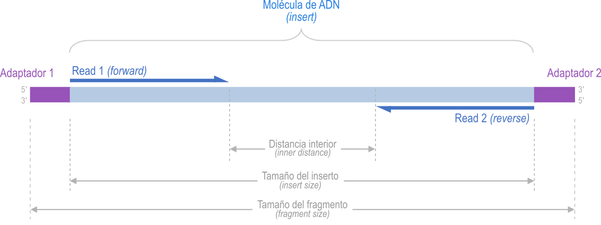

mamba activate ensam2 Obtención de datos
2.1 Software requerido
| Software | Versión | Descripción | Ref. |
|---|---|---|---|
| SRA Tools | 3.0.3 | Colección de herramientas para descargar datos desde la base de datos SRA1 (del inglés Sequence Read Archive; Katz et al. (2022)) del NCBI (del inglés National Center for Biotechnology Information) | Repositorio GitHub |
2.2 Datos
Descargaremos cuatro muestras de secuenciación de genoma completo o WGS (del inglés Whole Genome Sequencing) del organismo Helicobacter pylori, para ser ensambladas. Para descargar estas muestras necesitaremos los identificadores (número de acceso o accession number en inglés) en la base de datos SRA:
SRR22388518
SRR22388519
SRR18335437
SRR18335438
2.3 Descarga
Importante
Recuerde siempre activar el ambiente ensam (si no está activado ya) antes de ejecutar los comandos de esta guía:
Para empezar a descargar las muestras, abra una terminal y ejecute las órdenes que se dan a continuación.
Advertencia
Siempre que vea comentarios (líneas empezando con #) en las cajas de comandos, no los digite en la terminal. Estos comentarios solo proveen información adicional a cerca de cada comando.
Nota
- La descarga de cada muestra toma aproximadamente cinco minutos (o más), dependiendo de la velocidad de su conexión a Internet. No se preocupe si no ve ningún avance aparente después de ejecutar el comando de descarga (
fasterq-dump). - Si quiere ver el progreso de cada descarga, use la opción
-p(o--progress) confasterq-dump - Puede ver otras opciones útiles de
fasterq-dumpconsultando la ayuda:fasterq-dump --help
# Entrar al directorio para datos en el directorio del proyecto
cd $HOME/proyectos/ensamblaje/datos
# Descargar las muestras
fasterq-dump -S SRR22388518spots read : 870,940
reads read : 1,741,880
reads written : 1,741,880Finalizada la descarga fasterq-dump imprime en pantalla el resumen de las secuencias descargadas y escritas en archivos (salida anterior) .
Ahora verifique los archivos descargados:
ls -lhtotal 962M
-rw-rw-r-- 1 hector hector 481M mar 2 14:40 SRR22388518_1.fastq
-rw-rw-r-- 1 hector hector 481M mar 2 14:40 SRR22388518_2.fastqComo puede observar, hay dos archivos descargados con la extensión .fastq. Veamos la estructura de nombre de los archivos descargados:
SRR22388518 _ 1 . fastq
| | |
(accession number) (conjunto de secuencias) (extensión de archivo)
Importante
Hay dos archivos puesto que la muestra se secuenció con tecnología Illumina paired-end, en la cual resultan dos reads (secuencias), forward (_1) y reverse (_2), de secuenciar los extremos de una molécula de ADN. En la Figura 2.1 se detalla la ubicación relativa de los dos reads respecto del fragmento de ADN secuenciado. En el archivo _1 están guardas todas las secuencias forward y en el archivo _2, todas las secuencias reverse.

El formato FASTQ2 (Cock et al. 2010) es el estándar de facto para datos de secuenciación de segunda generación y es usado, entre otras, por la tecnología Illumina. Este formato almacena tanto las secuencias de ADN como la calidad de cada base secuenciada.
Ahora descarguemos el resto de las muestras:
fasterq-dump -S SRR22388519
fasterq-dump -S SRR18335437
fasterq-dump -S SRR18335438Ahora, aunque no es necesario, es una buena práctica comprimir las archivos descargados para que ocupen menos espacio en disco:
gzip *.fastqComo verá, ahora los archivos están comprimidos por lo que tienen la extensión .gz (.fastq.gz):
lsSRR18335437_1.fastq.gz SRR18335438_2.fastq.gz SRR22388519_1.fastq.gz
SRR18335437_2.fastq.gz SRR22388518_1.fastq.gz SRR22388519_2.fastq.gz
SRR18335438_1.fastq.gz SRR22388518_2.fastq.gzFinalmente, regresemos al directorio de proyectos:
cd $HOME/proyectos